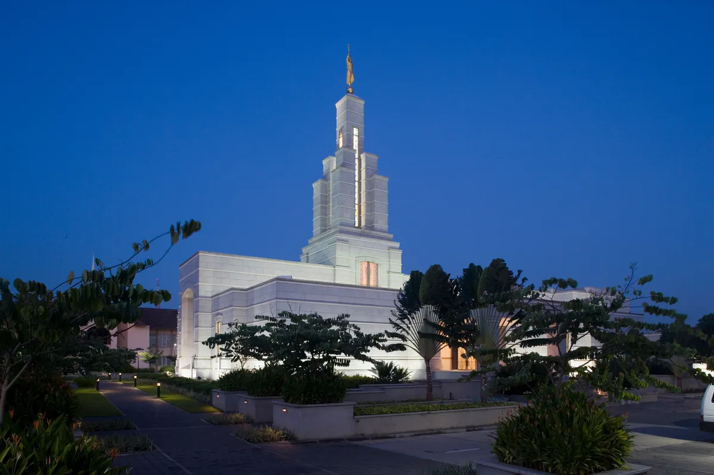
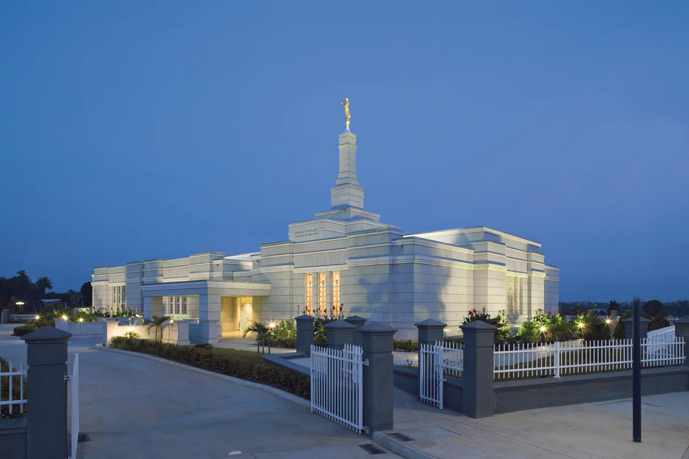
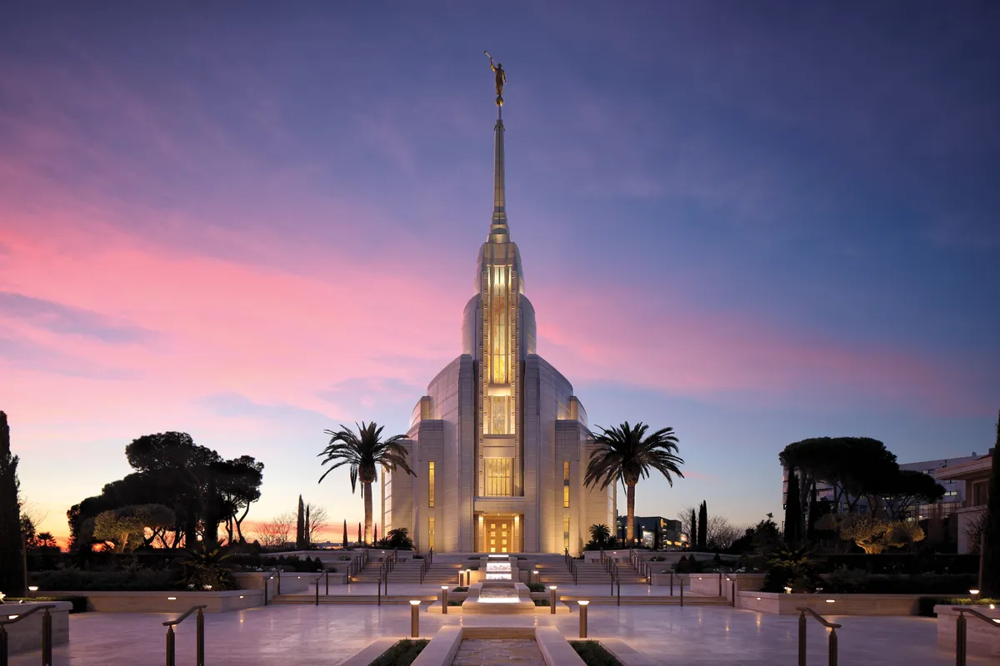
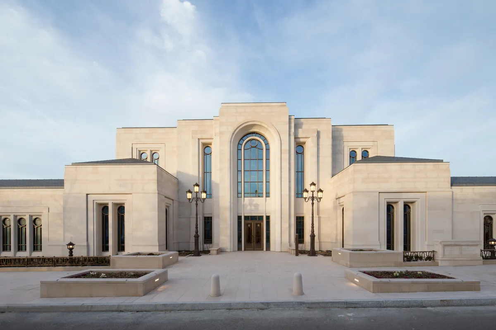
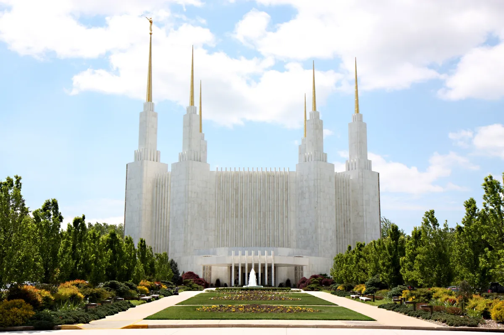
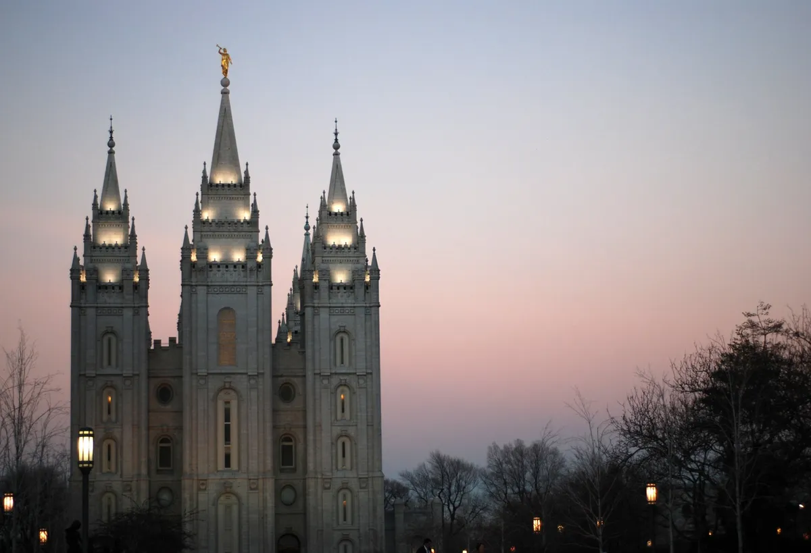
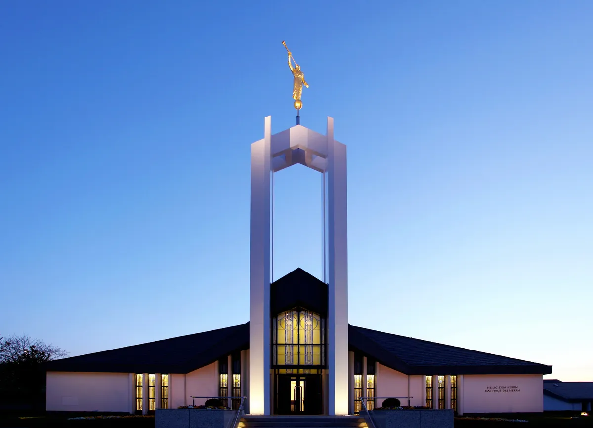

Temple Album
☰
Home
Old
New
Large
Small
Temple Gallery

Accra Ghana Temple

Aba Nigeria Temple
Lagos Nigeria Temple

Rome Italy Temple
London England Temple

Paris France Temple

Washington DC Temple

Salt Lake Temple

Freiberg Germany Temple